Evolutionary Selection Analysis
A guide to the package, with worked examples
2026-07-13
Source:vignettes/evolutionary-selection-analysis.Rmd
evolutionary-selection-analysis.RmdEvolutionary Selection Analysis Framework
1. Overview
This package measures natural selection on phenotypic traits the way
Lande & Arnold (1983) set out, and adds spline fitness functions,
fitness surfaces and adaptive landscapes on top of the same prepared
data. Svensson (2023) reviews the approach and the arguments about it;
Palacio et al. (2019) set out what an analysis should report, and
check_selection_assumptions() runs the checks they ask for
on the data and the models.
Key capabilities:
| Analysis Type | Description |
|---|---|
| Selection differentials () | Total selection acting on traits |
| Linear selection gradients () | Direct directional selection |
| Nonlinear selection gradients () | Stabilising/disruptive and correlational selection |
| Univariate correlated fitness functions | Flexible spline-based fitness functions at the individual level |
| Bivariate correlated fitness surfaces | Thin-plate spline (TPS) or GAM surfaces of individual fitness as a function of two traits |
| Adaptive landscapes | Mean fitness as a function of population mean phenotype (requires simulation) |
| Landscapes over time | One fitness function or surface per period, on trait axes shared by all periods |
| Canonical analysis | rotated to its canonical axes, and the curvature along each axis tested |
| Peak comparison | The difference in fitted fitness between two peaks, or between a peak and the valley between them, with its standard error |
| Uncertainty | Bootstrap intervals for the gradients; standard error lines or bands on GAM surfaces |
| Binary and count fitness | Logistic regression for survival; Poisson or negative binomial regression for offspring counts (p-values only; the gradients stay OLS) |
2. Mathematical Framework
2.1 Relative Fitness
Individual fitness is converted to relative fitness to enable comparisons across populations and generations:
where is the absolute fitness of individual (an offspring count, or survival coded 0/1), is the mean fitness of the population, and is the relative fitness of individual .
Why relative fitness? Selection operates on
relative, not absolute, differences in fitness. This standardisation
ensures that selection gradients are comparable across studies. Brodie
and Janzen (1996) showed that regressing absolute survival puts the
gradients on the wrong scale, which is why the package always
relativises fitness before fitting. File:
prepare_selection_data.R
2.2 Trait Standardisation
Traits are standardised to mean 0 and variance 1 before analysis:
where is the original trait value, and are the sample mean and standard deviation, and is the standardised value.
Purpose: Standardisation puts all traits on the same scale, allowing direct comparison of selection gradients. A means that a one-standard-deviation increase in the trait increases relative fitness by 0.5 units.
Standardise within the group you analyse. Traits and
relative fitness must be scaled within the population and time period in
question. With data from several years or sites, pass the column to
group and both steps are done separately within each level
before the data are stacked. This is the same as fitting a fixed effect
for the group in the regression, so the pooled gradients gain power from
the extra individuals without mixing the groups’ scales. It also means
the pooled model cannot test whether selection differs between groups (a
year by trait interaction); fit the groups separately with
return_grouped = TRUE for that.
Do not standardise twice. The gradients are the raw
partial regression coefficients from the models fitted to these
standardised traits. Do not wrap the traits in scale()
inside a model formula, and do not use a modelling option that
standardises predictors; either would scale the coefficients a second
time. File: prepare_selection_data.R
2.3 Selection Differential
The selection differential () measures the total selection acting on a trait, including both direct and indirect effects through correlated traits:
For multiple traits, the vector of selection differentials is:
It is the change in the trait mean within a generation (Arnold & Wade, 1984).
Interpretation:
represents the shift in trait mean after one generation of selection. A
positive
indicates the trait mean increases. File:
selection_differential.R
2.4 Linear Selection Gradients
Linear selection gradients () measure the direct directional selection on each trait, controlling for correlations with other traits:
In matrix form:
where is the phenotypic variance-covariance matrix.
For a model with two traits:
Interpretation: is the partial regression coefficient: the change in relative fitness for a one-standard-deviation increase in trait , holding all other traits constant.
Tests. The gradients always come from this
least-squares fit on relative fitness. Its t-tests are only valid when
the residuals are roughly normal, which holds for continuous fitness but
not for survival or offspring counts. For binary fitness the p-values
therefore come from a logistic regression of the raw 0/1 outcome on the
same terms, and for counts from a Poisson regression of the raw counts,
replaced by a negative binomial one when the counts are overdispersed.
The coefficients reported are still the least-squares gradients in every
case. File: analyze_linear_selection.R
2.5 Nonlinear Selection Gradients
Quadratic selection gradients () measure nonlinear selection, including stabilising/disruptive selection (diagonal elements) and correlational selection (off-diagonal elements):
For two traits, this expands to:
Important: The factor in the quadratic terms follows Lande & Arnold’s convention, making the second derivative of the fitness surface. In practice, most implementations (including this one) report the quadratic coefficient from regression, which equals .
Interpretation:
| value | Type | Interpretation |
|---|---|---|
| Stabilising selection | Intermediate trait values have highest fitness | |
| Disruptive selection | Extreme trait values have highest fitness | |
| Positive correlational | Selection favours positive correlation between traits | |
| Negative correlational | Selection favours negative correlation between traits |
Canonical axes: with several traits the curvature is
spread over the
and the
together. Canonical analysis (Phillips & Arnold, 1989; Blows &
Brooks, 2003) rotates
to its eigenvectors, combinations of the traits that each have a single
curvature, the eigenvalue
.
See canonical_analysis() in section 5.17.
File: analyze_nonlinear_selection.R,
analyze_disruptive_selection.R
2.6 Nonparametric Fitness Functions and Surfaces
Traditional quadratic models impose a fixed shape on the fitness function. Nonparametric methods allow the data to reveal unexpected patterns. These are still individual-level fitness functions; the population-level adaptive landscape is a separate construction (section 2.7). Cubic splines for one trait and thin-plate splines for two follow Schluter (1988) and Schluter and Nychka (1994); Brodie et al. (1995) is the guide to reading the surfaces.
Univariate spline model:
where is a smooth function estimated from the data using penalised regression splines.
Multivariate thin-plate spline:
where is a two-dimensional smooth surface showing how individual fitness varies across trait combinations. The univariate spline uses generalised cross-validation for its smoothing parameter (Schluter 1988); the surface uses REML. The surface is drawn only where there are data: grid points outside the convex hull of the observed trait pairs are blank, and a distance rule can also blank cells far from any individual, as Beausoleil et al. (2023) did for a community of Darwin’s finches. With a grouping column such as species, each group’s mean and the highest point of the surface within that group’s own range are marked on the plot.
GAM formulation:
File: correlated_fitness_surface.R
2.7 Adaptive Landscapes (Population Level)
Following Sewall Wright’s original concept, the adaptive landscape describes mean fitness as a function of population mean phenotype:
where:
-
= mean fitness of the population
- = population mean phenotypes
Unlike correlated fitness surfaces (which use individual data), adaptive landscapes require simulation because they represent a theoretical construct: the expected mean fitness for a population with a given mean phenotype.
Calculation procedure:
For each candidate population mean :
1. Simulate individuals around the mean
where is the within-population phenotypic variance–covariance matrix.
2. Predict individual fitness
3. Compute mean fitness
The resulting surface:
is the adaptive landscape.
Mathematical distinction
| Surface | Level | Formula | Interpretation |
|---|---|---|---|
| Correlated Fitness | Individual | Selection acting on individuals now | |
| Adaptive Landscape | Population | Where selection would move the population mean |
File: adaptive_landscape.R
The two surfaces are compared with
compare_fitness_surfaces_data() (section 5.15): the
correlated fitness surface describes the selection acting on individuals
now, and the adaptive landscape describes where that selection would
move a population’s mean. The same construction works for a single
trait, where the landscape is a curve of mean fitness against the
population mean, drawn alongside the fitness function it was averaged
from.
2.8 Landscapes over Time
Selection is rarely constant. Beausoleil et al. (2019) fitted a
separate fitness function to each year of the finch data and found the
shape changing from year to year, with two peaks in some years and a
slope in others. The package does the same with
temporal_landscape(): the fitness function (one trait) or
surface (two traits) and, if asked, the adaptive landscape are fitted
separately for each level of a time column, on traits standardised once
over all periods so that the periods share one axis. The result is one
row per period with the sample size, mean fitness, the degrees of
freedom of the smooth, the position of the highest fitness and, for one
trait, the number of interior peaks.
plot_temporal_landscape() draws the periods side by side
or, for one trait, as a heat map of fitness against trait and time.
File: temporal_landscape.R
3. Framework Structure
3.1 Core Scripts and Their Roles
| Script | Purpose | Key Functions | Mathematical Component |
|---|---|---|---|
prepare_selection_data.R |
Data preprocessing | Standardisation, relative fitness, NA handling | , |
detect_family.R |
Fitness type detection | Binary, count or continuous | , or |
selection_differential.R |
Selection differential | ||
selection_coefficients.R |
Main wrapper | Complete analysis | Gradient estimation |
analyze_linear_selection.R |
Linear gradients | Regression | |
analyze_nonlinear_selection.R |
Quadratic gradients | + interactions | |
analyze_disruptive_selection.R |
Single-trait quadratic | Stabilising/disruptive test | |
extract_results.R |
Result extraction | Coefficient parsing | , |
univariate_spline.R |
1D fitness | Cubic regression spline (GCV) | |
correlated_fitness_surface.R |
2D fitness | GAM / TPS | |
adaptive_landscape.R |
Adaptive landscape | Simulation | |
compare_fitness_surfaces.R |
Comparison | Surface contrast | Individual vs population |
plot_correlated_fitness.R |
Visualisation | Contour plots | 2D fitness |
plot_univariate_fitness.R |
Visualisation | Line + 95% band | Wald interval or bootstrap ribbon |
plot_adaptive_landscape.R |
Visualisation | Population surface | |
temporal_landscape.R |
Selection over time | One fit per period, summary table | |
plot_temporal_landscape.R |
Visualisation | Panels or heat map by period | |
selection_report.R |
Results table | , , , together | Same individuals, same scale |
bootstrap_selection.R |
Uncertainty | Resampling with replacement | Bootstrap SE, percentile CI |
check_selection_assumptions.R |
Assumption checks | Normality, VIF, rows per term, residuals | Mardia’s tests, Shapiro-Wilk, Breusch-Pagan |
canonical_analysis.R |
Canonical analysis | Eigen-decomposition of , double regression | |
peak_difference.R |
Peak comparison | Difference in fitted fitness between two points, lowest point on the line between | Link-scale difference, SE from the model’s covariance |
run_app.R |
Interactive app | The whole workflow in a browser | Same calculations as the functions above |
3.2 Function Dependencies
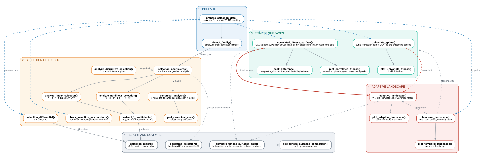
Function dependencies. Drawn from workflow.dot with Graphviz.
Solid arrows show data passed from one function to the next. Blue dashed arrows carry the prepared data to the functions that use it directly; grey dashed arrows show a result being reused elsewhere.
4. Installation and Requirements
4.2 Package Descriptions
mgcv, MASS, Matrix,
ggplot2 and dplyr install with the package;
the rest are needed only for the features listed.
| Package | Purpose |
|---|---|
mgcv |
Generalised additive models (GAMs) for flexible spline-based fitness estimation |
fields |
Thin-plate spline (TPS) interpolation for bivariate fitness surfaces |
MASS |
Multivariate normal simulation (mvrnorm) for adaptive
landscape generation |
Matrix |
Matrix operations and positive-definite corrections
(nearPD) |
car |
Type III ANOVA and variance inflation factor (VIF) diagnostics |
ggplot2 |
Visualisation of fitness functions and contour surfaces |
dplyr |
Data manipulation and transformation (filtering, summarising) |
ggrepel |
Improved text labelling in plots (avoids overlap) |
viridis |
Perceptually uniform colour scales for scientific visualisation |
patchwork |
Composing multiple plots into a single figure |
performance |
Heteroscedasticity, overdispersion and in the assumption checks |
akima |
Putting the two surfaces on one grid to correlate them in
compare_fitness_surfaces_data()
|
shiny |
The app, run_app()
|
plotly |
The rotatable 3D landscape in the app |
4.3 Example data and the app
Five datasets come with the package, each with a help page giving its
columns and source: bumpus, the house sparrows of Bumpus
(1899); crescent_pond_pupfish and
little_lake_pupfish, the pupfish of Martin (2016);
finch_yearly, the medium ground finches of Beausoleil et
al. (2019); and finch_community, the five finch groups of
Beausoleil et al. (2023). Most examples below use simulated data;
sections 5.16, 5.17 and 7.0 use finch_yearly and
bumpus.
run_app() runs the same workflow in a browser, on four
of these datasets (all but finch_yearly) or an uploaded
CSV, and writes out the R calls that repeat the analysis with its
settings.
5. Detailed Function Reference
5.1 prepare_selection_data()
Purpose: Preprocesses raw data for selection analysis.
prepare_selection_data(
data, # Data frame
fitness_col, # Name of fitness column (character)
trait_cols, # Vector of trait column names
standardize = TRUE, # Standardise traits to mean 0, SD 1
group = NULL, # Standardise and relativise within this column (e.g. year)
add_relative = TRUE, # Add relative fitness column
na_action = c("warn", "drop", "none"), # How to handle NAs
name_relative = "relative_fitness" # Name for relative fitness column
)Returns: Modified data frame with:
- Standardised traits (if
standardize = TRUE) - Relative fitness column (if
add_relative = TRUE) - Potentially dropped NA rows (if
na_action = "drop")
Example:
set.seed(42)
raw_data <- data.frame(
survival = rbinom(100, 1, 0.6),
size = rnorm(100, 10, 2),
colour = rnorm(100, 5, 1)
)
prepared <- prepare_selection_data(
data = raw_data,
fitness_col = "survival",
trait_cols = c("size", "colour"),
standardize = TRUE,
add_relative = TRUE,
na_action = "drop"
)
cat("size:", nrow(prepared), "\n")
#> size: 100
head(prepared)
#> survival size colour relative_fitness
#> 1 0 0.3732348 -0.03515215 0.000000
#> 2 0 -0.8154449 -1.65383838 0.000000
#> 3 1 1.7210532 1.25893003 1.851852
#> 4 0 0.7182770 -0.28472648 0.000000
#> 5 0 0.1236614 -0.49278752 0.000000
#> 6 1 0.3244579 -1.31818396 1.8518525.2 detect_family()
Purpose: Automatically determines whether fitness is binary, count or continuous.
detect_family(y) # y = fitness vectorLogic:
- Binary if all values are 0 or 1 (a warning if there are fewer than 10 of them)
- Count if all values are non-negative whole numbers
- Continuous otherwise, including proportions and relative fitness
Returns: List with:
-
$type: “binary”, “count” or “continuous” -
$family: the GLM family the p-value model starts from (binomial, Poisson or Gaussian)
Example:
# Binary fitness
fitness_binary <- c(1, 0, 1, 1, 0, 1)
detect_family(fitness_binary)
#> $type
#> [1] "binary"
#>
#> $family
#>
#> Family: binomial
#> Link function: logit
#>
#>
#> $note
#> [1] "Binary fitness (0/1) detected. Use logistic GLM for p-values."
# Continuous fitness
fitness_cont <- c(2.3, 4.1, 3.2, 5.6, 1.8)
detect_family(fitness_cont)
#> $type
#> [1] "continuous"
#>
#> $family
#>
#> Family: gaussian
#> Link function: identity
#>
#>
#> $note
#> [1] "Continuous fitness detected. Using Gaussian family."5.3 selection_differential()
Purpose: Calculates the selection differential () for a single trait.
selection_differential(
data,
fitness_col,
trait_col,
standardized = TRUE, # Whether trait is already standardised
use_relative = TRUE # Use relative fitness
)Formula:
When traits are standardised (), this simplifies to:
Example:
# Calculate selection differential for size
S_size <- selection_differential(
data = prepared,
fitness_col = "relative_fitness",
trait_col = "size",
standardized = TRUE,
use_relative = TRUE
)
# Calculate for colour
S_colour <- selection_differential(
data = prepared,
fitness_col = "relative_fitness",
trait_col = "colour",
standardized = TRUE,
use_relative = TRUE
)
cat("Selection Differentials (S):\n")
#> Selection Differentials (S):
cat("Size :", round(S_size, 4), "\n")
#> Size : -0.1126
cat("Colour:", round(S_colour, 4), "\n")
#> Colour: -0.00785.4 analyze_linear_selection()
Purpose: Estimates linear selection gradients () with comprehensive diagnostics.
analyze_linear_selection(
data,
fitness_col,
trait_cols,
fitness_type # "binary", "count" or "continuous"
)Features:
- Sample size checks (warning if n < 10)
- Missing data handling
- Convergence checks for GLM
- Type III ANOVA (if
carpackage available) - Separation detection for binary models
Returns: List containing:
-
$model: the fitted lm for continuous fitness; for binary and count fitness a list with$ols(the gradient model) and$glm(the model the p-values come from) -
$summary: Model summary, or a list of the two summaries -
$anova: Type III ANOVA table (if available)
Example:
linear_results <- analyze_linear_selection(
data = prepared,
fitness_col = "relative_fitness",
trait_cols = c("size", "colour"),
fitness_type = "continuous"
)
# View coefficients
summary(linear_results$model)
#>
#> Call:
#> lm(formula = as.formula(paste(fitness_col, "~", rhs)), data = fit_data)
#>
#> Residuals:
#> Min 1Q Median 3Q Max
#> -1.3632 -0.9623 0.7068 0.8423 1.0484
#>
#> Coefficients:
#> Estimate Std. Error t value Pr(>|t|)
#> (Intercept) 1.0000000 0.0930049 10.752 <2e-16 ***
#> size -0.1137116 0.0936612 -1.214 0.228
#> colour -0.0006674 0.0936612 -0.007 0.994
#> ---
#> Signif. codes: 0 '***' 0.001 '**' 0.01 '*' 0.05 '.' 0.1 ' ' 1
#>
#> Residual standard error: 0.93 on 97 degrees of freedom
#> Multiple R-squared: 0.01504, Adjusted R-squared: -0.00527
#> F-statistic: 0.7405 on 2 and 97 DF, p-value: 0.47955.5 analyze_nonlinear_selection()
Purpose: Estimates quadratic () and correlational () selection gradients.
analyze_nonlinear_selection(
data,
fitness_col,
trait_cols,
fitness_type
)Model specification: Automatically constructs:
- Linear terms:
- Quadratic terms:
- Interaction terms: (for i < j)
Diagnostics:
- Sample size checks (n < 20 warning)
- Variance inflation factors (VIF > 5 warning)
- Convergence monitoring for GLM
Example:
nonlinear_results <- analyze_nonlinear_selection(
data = prepared,
fitness_col = "relative_fitness",
trait_cols = c("size", "colour"),
fitness_type = "continuous"
)
# Extract quadratic term for size (multiply by 2 for gamma)
coef(summary(nonlinear_results$model))["I(size^2)", ]
#> Estimate Std. Error t value Pr(>|t|)
#> -0.09616280 0.06704955 -1.43420501 0.154832155.6 analyze_disruptive_selection()
Purpose: Specialised function for detecting disruptive or stabilising selection on a single trait.
analyze_disruptive_selection(
data,
fitness_col,
trait_col,
fitness_type = c("auto", "binary", "count", "continuous"),
standardize = TRUE,
group = NULL
)Models:
comes from the linear-only model
and
from
(with the standard error doubled as well), following Lande & Arnold
(1983) and Stinchcombe et al. (2008). Both are computed through
selection_coefficients() on the single trait.
Returns: Data frame with:
- Linear term (): Directional selection
- Quadratic term (): Disruptive (positive) or stabilising (negative)
Example:
disruptive_test <- analyze_disruptive_selection(
data = prepared,
fitness_col = "relative_fitness",
trait_col = "size",
fitness_type = "continuous"
)
print(disruptive_test)
#> Term Type Beta_Coefficient Standard_Error P_Value Variance
#> 1 size Linear -0.1137538 0.09299531 0.2241794 0.008648127
#> 2 size² Quadratic -0.1971818 0.11967907 0.1026730 0.0143230795.7 univariate_spline()
Purpose: Fits a flexible nonparametric fitness function using GAMs.
univariate_spline(
data,
fitness_col,
trait_col,
fitness_type = c("auto", "binary", "count", "continuous"),
group = NULL, # optional group fixed effect
relative_col = NULL, # pre-computed relative fitness column, if any
k = 10, # basis dimension
bs = "cr", # spline basis: "cr", "tp" or "ps"
smoothing = "GCV.Cp", # how the smoothing parameter is chosen: "GCV.Cp", "REML" or "ML"
bootstrap = FALSE, # TRUE: percentile-bootstrap 95% ribbon (Schluter 1988)
n_boot = 1000
)Technical details:
- Penalised cubic regression spline (
bs = "cr") with the smoothing parameter chosen by generalised cross-validation, following Schluter (1988).bsandsmoothingexist to match the smoother another study used; they change the family of curves, not how much the data are smoothed, which is always chosen from the data. A warning is given if mgcv’s check suggestskleft the curve too little room to bend. - For binary fitness: binomial GAM with logit link on the raw 0/1 values; for counts: Poisson GAM with log link on the raw counts; for continuous fitness: Gaussian GAM on relative fitness
- 95% band: parametric (Wald) by default, or a percentile bootstrap
over individuals with
bootstrap = TRUE
Example:
# k is capped from the number of distinct trait values; the default is fine here
spline_fit <- univariate_spline(
data = prepared,
fitness_col = "survival",
trait_col = "size",
fitness_type = "binary",
bootstrap = TRUE
)
head(spline_fit$grid)
#> size fit lwr upr
#> 1 -3.190356 0.4562304 3.693586e-07 0.9999977
#> 2 -3.159592 0.4591544 4.885365e-07 0.9999972
#> 3 -3.128828 0.4620803 6.476331e-07 0.9999965
#> 4 -3.098065 0.4650070 8.585529e-07 0.9999956
#> 5 -3.067301 0.4679334 1.191470e-06 0.9999945
#> 6 -3.036537 0.4708582 1.503094e-06 0.99999335.8 plot_univariate_fitness()
Purpose: Visualises univariate correlated fitness functions with confidence bands.
plot_univariate_fitness(
uni, # Output from univariate_spline()
trait_col,
title = NULL
)Returns: ggplot2 object with line plot and 95% confidence bands.
Example:
p <- plot_univariate_fitness(
spline_fit,
"size",
title = "Correlated Fitness Function: Body Size"
)
print(p)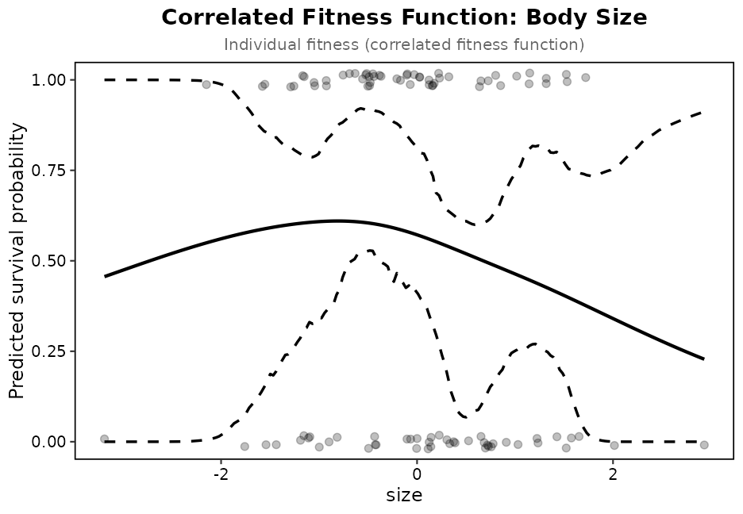
Figure 1. Correlated fitness function for body size
5.9 correlated_fitness_surface()
Purpose: Estimates 2D fitness surfaces using thin-plate splines (continuous) or GAMs (binary and count fitness).
correlated_fitness_surface(
data,
fitness_col,
trait_cols, # Exactly 2 traits
grid_n = 60, # Grid resolution (grid_n × grid_n points)
method = "auto", # "auto", "gam", or "tps"
scale_traits = FALSE, # Traits are normally standardised upstream
group = NULL, # Optional grouping column, e.g. species or year
group_effect = TRUE, # Group as a fixed effect in the model, or FALSE to use it only for the overlay
k = NULL, # Basis dimension for the GAM smooth; set from the data if NULL
mask = TRUE, # Leave grid points outside the data blank
too_far = NULL, # Also blank cells farther than this share of the range from any individual
bs = "tp", # GAM basis: "tp", "cr" or "ps"
smoothing = "REML", # GAM smoothing parameter choice: "REML", "GCV.Cp" or "ML"
clamp = TRUE, # Hold thin-plate predictions within the range of the fitness type
level = 0.95, # Confidence level of the band around a GAM surface
by_group = FALSE # TRUE: a separate surface for each group, returned as a named list
)Method selection:
-
"tps": Usesfields::Tps()for continuous fitness (spline-based) -
"gam": Usesmgcv::gam()with a thin-plate smooth and REML smoothing (works for all three). The family follows the fitness column: binomial for 0/1, Poisson with a log link for counts such as recapture years or offspring, Gaussian otherwise.bsandsmoothingswap in another basis or criterion to match a published analysis; with"cr"or"ps"the two traits enter as a tensor product. -
"auto": Chooses based on fitness type (GAM for binary and count, TPS for continuous)
Basis dimension: with k = NULL the GAM
uses min(30, max(10, floor(sqrt(n1 * n2)))), where
n1 and n2 are the numbers of distinct values
of each trait, capped at one less than the number of observations. Pass
an integer to override it.
Masking: the fitted surface is evaluated on a
rectangular grid, and the corners of that rectangle are usually places
no individual occupies. With mask = TRUE grid points
outside the convex hull of the observed trait pairs get NA
fitness, so the optimum is found within the data, and the plots draw the
surface up to the hull and leave the outside blank. The grid keeps the
unmasked predictions in .fit_all, records which points were
kept in .inside, and the result carries the hull polygon in
$hull. The hull still bridges gaps between separate
clusters of individuals, such as two species on one surface.
too_far adds the distance rule from
mgcv::vis.gam: after scaling the grid to the unit square,
cells farther than too_far from the nearest individual are
blanked as well, and the distance is kept in .dist.
Beausoleil et al. (2023) used 0.15. The default applies no distance
rule.
Separate fits: by_group = TRUE, here
and in univariate_spline(), fits each group on its own rows
and returns a named list, rather than one shape shifted by a group term.
Prepare the data with the same group so each is
standardised on its own, and plot with lapply().
Groups: with group the GAM includes the
column as a fixed effect and predicts the surface at the reference
level, as the gradient models do for year or site.
group_effect = FALSE fits one surface to everyone and uses
the group only for the overlay, which is what a community surface of
several species needs. The result’s $groups table gives,
for each group, its size, its mean of both traits and the highest point
of the surface within that group’s own convex hull, with
peak_interior saying whether that point is a peak of the
surface and peak_edge whether it sits at the edge of the
data; when both are FALSE the surface keeps rising past the
group’s range. The plots mark the means as labelled open circles and the
peaks as triangles, filled for a peak and open otherwise, which is how
Beausoleil et al. (2023) placed several species on one surface.
$peaks lists every local maximum of the kept surface the
same way, and the gold optimum becomes an open diamond when the highest
cell sits at the edge of the data.
Returns: List containing:
-
$model: Fitted model object -
$grid: Data frame with trait values, predicted fitness (.fit, masked),.fit_alland.inside; with the GAM also the standard error of the fit (.se) and its band (.fit_lo,.fit_hi) -
$hull: The convex hull of the data, used by the plots -
$original_data: The rows that were analysed -
$peaks: The local maxima of the kept surface, highest first,interiorTRUEfor a peak inside the data,FALSEfor a maximum at its edge -
$groups: Withgroup, one row per group with its mean traits and highest point, flaggedpeak_interiorandpeak_edge -
$method: Method used -
$k: Basis dimension used (GAM method) -
$data_type: “binary”, “count” or “continuous”
Example: survival is binary, so the raw 0/1 column goes in and a binomial GAM is fitted.
surface <- correlated_fitness_surface(
data = prepared,
fitness_col = "survival",
trait_cols = c("size", "colour"),
method = "gam"
)
# Find optimum (maximum fitness)
optimum <- surface$grid[which.max(surface$grid$.fit), ]
print(optimum)
#> size colour .fit .se .fit_lo .fit_hi .fit_all
#> 2248 -0.3887548 0.5928513 0.7006815 0.1199263 0.432857 0.8777501 0.7006815
#> .se_all .fit_lo_all .fit_hi_all .inside
#> 2248 0.1199263 0.432857 0.8777501 TRUE5.10 plot_correlated_fitness()
Purpose: Visualise 2D fitness surfaces with contour plots.
plot_correlated_fitness(
tps, # Output from correlated_fitness_surface()
trait_cols, # The two trait names
bins = 12, # Number of contour bins
show_optimum = TRUE, # Mark the highest fitness: gold diamond inside the data, open at its edge
show_groups = TRUE, # Mark group means and highest points when the surface has a group
group_lines = TRUE, # Dashed line from each group's mean to its peak
uncertainty = "none", # "se": standard error lines; "band": lower, fit and upper panels
... # Passed to ggplot2::labs(), e.g. title or fill
)
plot_correlated_fitness_enhanced(
tps, # Output from correlated_fitness_surface()
trait_cols,
original_data, # Individuals to overlay, coloured by fitness
fitness_col,
bins = 12,
uncertainty = "none"
)Uncertainty: a GAM surface carries the standard
error of its fitted fitness and a band around it, worked out on the
scale of the link. uncertainty = "se" draws the standard
error as dashed contour lines over the surface, and
uncertainty = "band" draws the lower bound, the fit and the
upper bound side by side on one fill scale.
peak_difference(surface, from, to, valley = TRUE) gives the
difference in fitted fitness between two points, given as group names or
trait values, and between each of them and the lowest point on the line
joining them, with standard errors from the covariance of the model’s
coefficients. The thin-plate spline gives no standard errors.
Example:
p <- plot_correlated_fitness(
tps = surface,
trait_cols = c("size", "colour"),
bins = 12
)
print(p)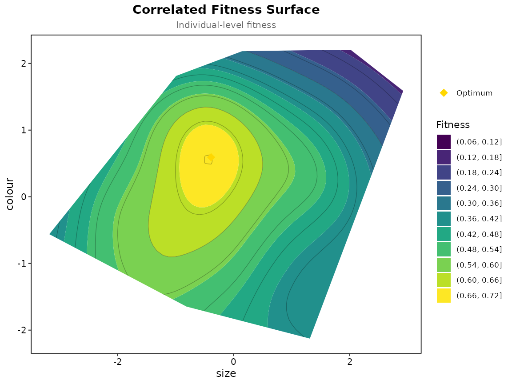
Correlated fitness surface for size and colour
p <- plot_correlated_fitness_enhanced(
tps = surface,
trait_cols = c("size", "colour"),
original_data = prepared,
fitness_col = "survival",
bins = 12
)
print(p)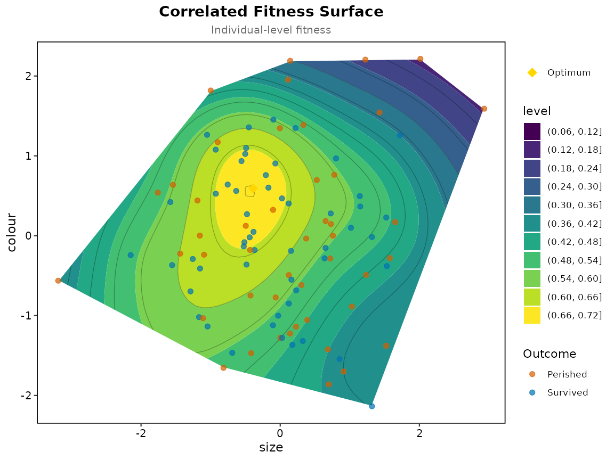
Correlated fitness surface with original data points
5.11 adaptive_landscape()
Purpose: Calculates the Wrightian adaptive landscape, which is a population-level concept distinct from correlated fitness surfaces.
adaptive_landscape(
data, # Individual-level data frame
fitness_model, # $model from correlated_fitness_surface() or univariate_spline()
trait_cols, # One or two trait names
group_col = NULL, # Optional grouping column (e.g., "species")
population_variance = NULL,# Within-population variance-covariance matrix
simulation_n = 1000, # Number of individuals to simulate per grid point
grid_n = 50, # Grid resolution (grid_n × grid_n)
custom_range = NULL, # Optional custom range for population means
clamp = TRUE, # Hold thin-plate fitness within the range of the fitness type
support_warn = 0.25 # Share outside the data at the optimum that draws a note
)Calculation Steps:
- Create grid of possible population means (, ) across the trait range
- Estimate within-population variance from the data
- Simulate individuals around each population mean:
- Predict fitness for each simulated individual using the fitted model
- Calculate mean fitness
- Find optimum - the population mean that maximises
The simulated populations spread beyond the data, more so towards the edge of the grid, and the fitness of those individuals is extrapolated. The function reports how far this goes, as the share of each simulated population falling outside the convex hull of the observed traits, and says so when the optimum rests on it.
Returns:
-
$grid: Population means with mean fitness (.mean_fit); with one trait also the fitness function at those means (.ind_fit) -
$optimum: Population mean with highest fitness -
$support: Share of simulated individuals outside the data, over the grid (outside) and at the optimum (at_optimum); per population mean in the grid’s.outside -
$actual_population_means: Actual means (if group_col provided)
An optimum on the edge of the grid: this usually
means the true optimum lies outside the observed traits.
custom_range, a named list with one range per trait, moves
or widens the grid, but fitness out there is extrapolated, and
$support says how much of the simulated population that
involves.
With a single trait the grid is a line of population means, the model
is normally the $model of univariate_spline(),
and the result is a curve rather than a surface.
Example:
landscape <- adaptive_landscape(
data = prepared,
fitness_model = surface$model,
trait_cols = c("size", "colour"),
grid_n = 50,
simulation_n = 1000
)
landscape$optimum
#> size colour .mean_fit .outside
#> 1173 -0.5666342 -0.1465932 0.5624699 0.1385.12 plot_adaptive_landscape()
Purpose: Creates a 2D contour map showing how mean fitness varies with population mean phenotypes, or, for a single trait, a curve of mean fitness against the population mean with the fitness function drawn dashed alongside it.
plot_adaptive_landscape(
landscape, # Output from adaptive_landscape()
trait_cols, # One or two trait column names
original_data = NULL, # Optional original data for overlaying points
group_col = NULL, # Optional grouping column for labels
bins = 12, # Number of contour bins
show_optimum = TRUE, # Show optimal population mean (gold diamond)
show_actual_means = TRUE, # Show actual population means (red points)
show_individual = TRUE, # One trait: also draw the fitness function
show_support = FALSE, # Mark where most of the simulated population leaves the data
support_level = 0.5 # The share outside the data at which that line is drawn
)
plot_adaptive_landscape_3d(
landscape, # Output from adaptive_landscape()
trait_cols, # Two trait column names
theta = -30, # Azimuthal rotation angle
phi = 30 # Colatitude tilt angle
)Example:
p <- plot_adaptive_landscape(
landscape = landscape,
trait_cols = c("size", "colour"),
bins = 12
)
print(p)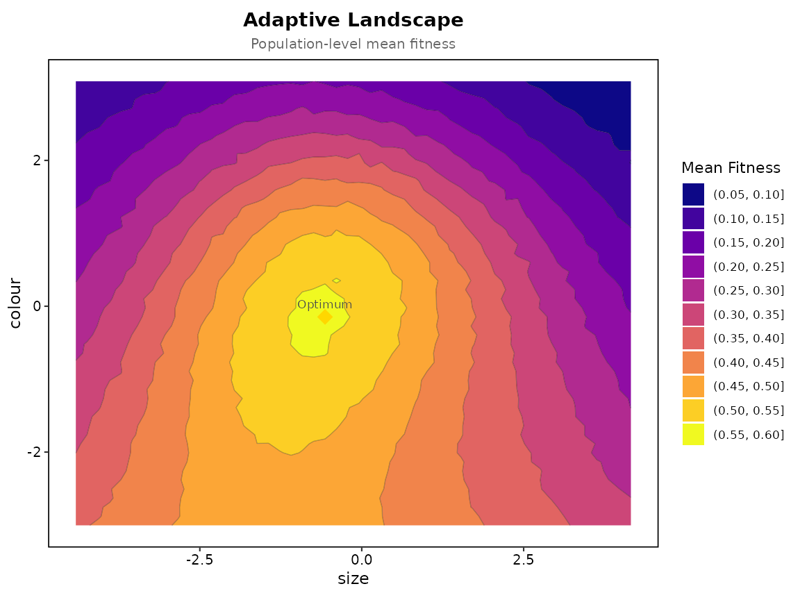
Adaptive landscape showing mean fitness as function of population mean size and colour
plot_adaptive_landscape_3d(
landscape = landscape,
trait_cols = c("size", "colour"),
theta = -30,
phi = 30
)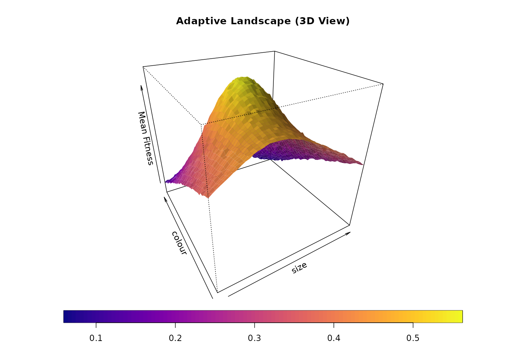
3D adaptive landscape showing the shape of mean fitness
5.13 selection_coefficients()
Purpose: Main wrapper function that runs a complete selection analysis.
selection_coefficients(
data,
fitness_col,
trait_cols,
fitness_type = c("auto", "binary", "count", "continuous"),
standardize = TRUE,
group = NULL, # optional grouping column (e.g. year)
use_relative_for_fit = TRUE,
return_grouped = FALSE # TRUE: one set of gradients per group
)Workflow:
- Prepares data (standardisation, relative fitness)
- Detects fitness type (if
auto) - Runs linear selection analysis
- Runs nonlinear selection analysis
- Extracts all coefficients into a single table
Returns: Data frame with columns:
-
Term: Coefficient name (e.g., “size”, “size²”, “size×colour”) -
Type: “Linear”, “Quadratic”, or “Correlational” -
Beta_Coefficient: Estimated selection gradient -
Standard_Error: Standard error of estimate -
P_Value: Statistical significance -
Variance: Square of standard error
Example:
results_binary <- selection_coefficients(
data = prepared,
fitness_col = "survival", # Binary 0/1
trait_cols = c("size", "colour"), # Only available traits
fitness_type = "binary",
standardize = TRUE
)
print(results_binary)
#> Term Type Beta_Coefficient Standard_Error P_Value
#> 1 size Linear -0.1137115929 0.09366118 0.22486021
#> 2 colour Linear -0.0006673983 0.09366118 0.99313501
#> 3 size² Quadratic -0.1923255937 0.13409909 0.14687155
#> 4 colour² Quadratic -0.3230714003 0.16086280 0.04719178
#> 5 size × colour Correlational 0.0051607761 0.10537314 0.91801711
#> Variance
#> 1 0.008772416
#> 2 0.008772416
#> 3 0.017982567
#> 4 0.025876841
#> 5 0.011103499The table is put together by three exported helpers,
extract_linear_coefficients(),
extract_quadratic_coefficients() and
extract_interaction_coefficients(). Each takes the trait
names and the model object from analyze_linear_selection()
or analyze_nonlinear_selection(), pulls the terms out by
name, doubles the quadratic estimates and skips any term the model does
not have. They are only needed if you fit the models yourself and want
the same table.
5.14 One-call wrappers
The full workflow is available in one call through
selection_coefficients() (the coefficient table) and
selection_report() (differentials and gradients in a single
standardised table):
selection_report(prepared, "survival", c("size", "colour"), fitness_type = "binary")
#> Selection analysis (standardised traits, relative fitness)
#> Fitness type: binary
#>
#> Term Type Estimate Std_Error P_Value Sig
#> size Differential -0.1126 NA NA
#> colour Differential -0.0078 NA NA
#> size Linear -0.1137 0.0937 0.2249
#> colour Linear -0.0007 0.0937 0.9931
#> size² Quadratic -0.1923 0.1341 0.1469
#> colour² Quadratic -0.3231 0.1609 0.0472 *
#> size × colour Correlational 0.0052 0.1054 0.9180
#>
#> Signif: *** 0.001 ** 0.01 * 0.05 . 0.15.15 compare_fitness_surfaces_data()
Purpose: Compares the individual-level fitness surface with the population-level adaptive landscape: their optima, the distance between them, summary statistics and the correlation between the two surfaces. The surface is selection on individuals and the landscape is where the population mean would move, so the two can peak in different places.
comparison <- compare_fitness_surfaces_data(
correlated_surface = surface,
adaptive_landscape = landscape,
trait_cols = c("size", "colour")
)
comparison$summary_stats
#> Surface Fitness_Range_Min Fitness_Range_Max Fitness_Mean
#> 1 Correlated Fitness 0.17063668 0.7006815 0.4908177
#> 2 Adaptive Landscape 0.05906825 0.5624699 0.3492047
#> Fitness_SD N_Points
#> 1 0.1185462 3600
#> 2 0.1227410 2500
plots <- plot_fitness_surfaces_comparison(
comparison_data = comparison,
bins = 15
)
print(plots$overlay)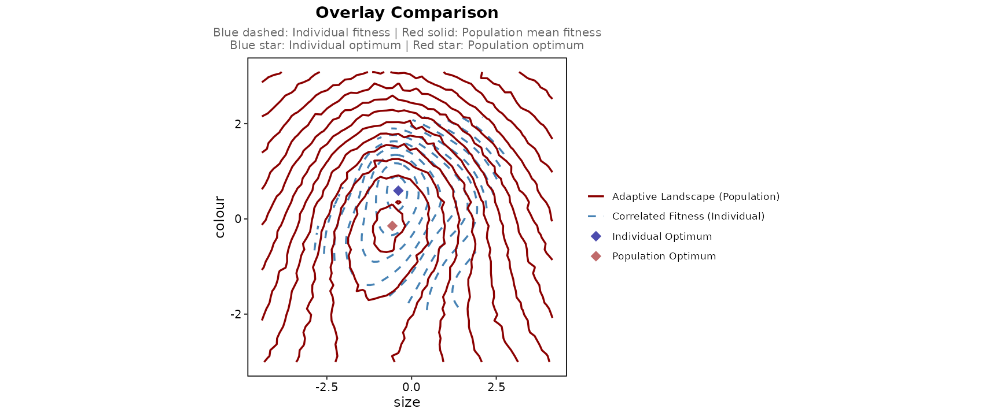
Overlay comparison
plots <- plot_fitness_surfaces_comparison(
comparison_data = comparison,
bins = 15
)
print(plots$side_by_side)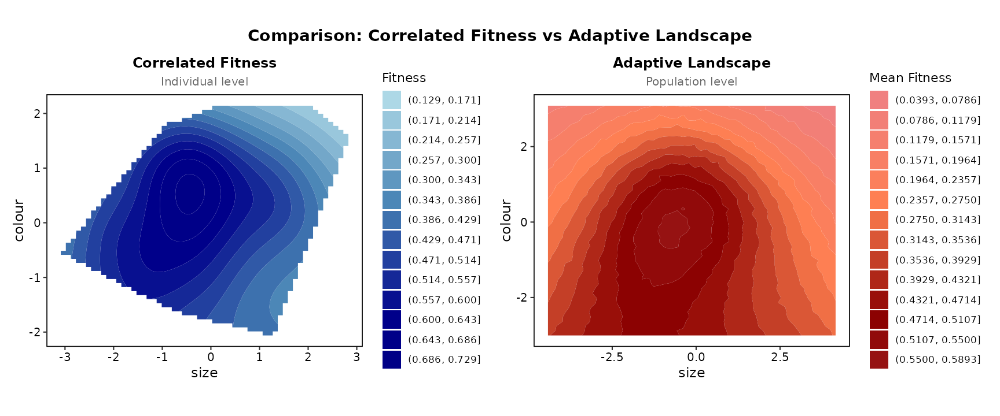
Side-by-side comparison
5.16 temporal_landscape() and
plot_temporal_landscape()
Purpose: Fit the fitness function or surface, and optionally the adaptive landscape, separately for each period, to see how selection changes over time.
temporal_landscape(
data, # Traits standardised once, over all periods
fitness_col,
trait_cols, # One or two traits
time_col, # The period of each row, usually year
fitness_type = "auto",
min_n = 20, # Periods with fewer rows are skipped
landscape = TRUE, # Also the adaptive landscape per period
bootstrap = FALSE, # Band around each period's fitness function (one trait)
grid_n = 60, simulation_n = 300
)
plot_temporal_landscape(
tl,
type = "panels", # or "heatmap" for one trait
show_points = TRUE, show_landscape = TRUE, show_optimum = TRUE,
ncol = NULL # Panel columns
)Returns: a list with one fit and one landscape per
period, a summary table (n, mean fitness, trait means, the
smooth’s degrees of freedom, the position and height of the highest
fitness and whether it sits at the edge of the data, the number of
interior peaks for one trait, and the landscape optimum), the fitted
values of every period stacked in grid, for one trait the
fitness functions on a common grid in heat (blank where a
period has no individuals), and the periods skipped for having fewer
than min_n rows.
Standardise the traits once, over all periods, before calling: the
periods must share one trait axis, so nothing is restandardised per
period. The number of peaks depends on the basis size k as
any spline feature does; treat it as a description of the fitted curve,
and test disruptive selection with the quadratic gradient on the birds
between the peaks as Beausoleil et al. (2019) did.
Example: medium ground finches at El Garrapatero, one row per bird per year it was seen, survival to the next year against beak size (first principal component of the three beak medians), from the public data of Beausoleil et al. (2019).
finch_prep <- prepare_selection_data(finch_yearly, "survived", "beak_pc1")
years <- temporal_landscape(finch_prep, "survived", "beak_pc1", "year", simulation_n = 200)
years$summary[, c("time", "n", "mean_fitness", "edf", "optimum_beak_pc1", "peaks")]
#> time n mean_fitness edf optimum_beak_pc1 peaks
#> 1 2004 110 0.27272727 2.514761 2.56126184 1
#> 2 2005 185 0.20540541 3.891967 1.51821556 2
#> 3 2006 233 0.08583691 1.000098 2.70000995 0
#> 4 2007 61 0.26229508 1.672904 0.70740350 1
#> 5 2008 127 0.20472441 6.385272 -0.02345104 3
#> 6 2009 196 0.15306122 4.007243 2.84197912 1
#> 7 2010 175 0.12000000 1.000048 -2.10396884 0
plot_temporal_landscape(years, ncol = 4)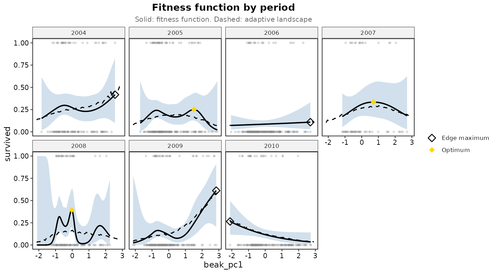
Survival against beak size, one panel per year. Solid: fitness function. Dashed: adaptive landscape. Diamond: highest survival.
plot_temporal_landscape(years, type = "heatmap")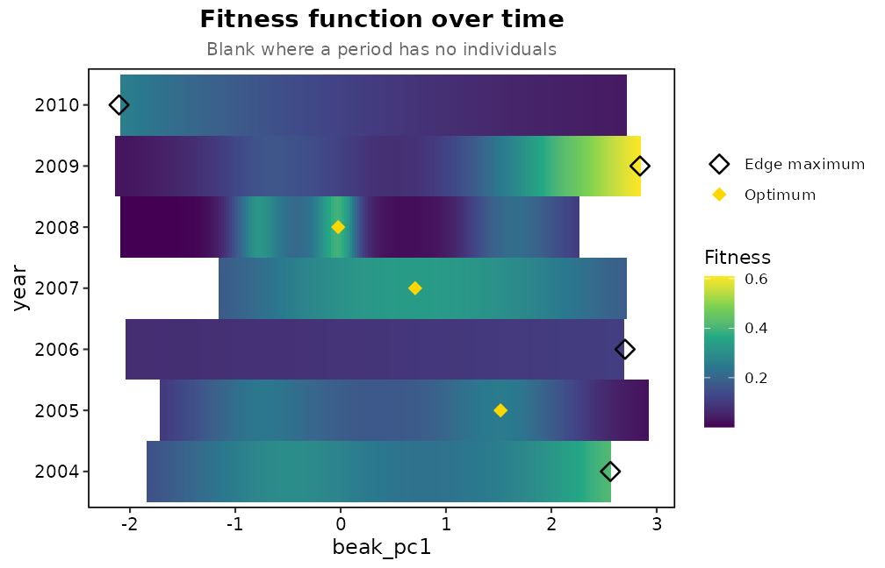
The same fitness functions as a heat map, blank where a year has no birds.
The spline finds more than one peak in 2005 and 2008 and a steep rise
towards large beaks in 2009, the year with the strongest selection in
Beausoleil et al. (2019). Peaks in a fitted curve are a description, not
a test; their test was the quadratic gradient on the birds between the
peaks, which is analyze_disruptive_selection() in section
5.6 run on that subset.
5.17 canonical_analysis() and
plot_canonical_axes()
Purpose: Rotate the matrix of quadratic and correlational gradients to its canonical axes and read the curvature along each.
canonical_analysis(
data, fitness_col, trait_cols,
fitness_type = "auto",
standardize = TRUE,
group = NULL, # Standardise and relativise within groups, as the gradients do
bootstrap = FALSE, # Percentile intervals for the eigenvalues
n_boot = 200,
conf = 0.95
)Returns: the gamma matrix,
,
the loadings M with one column per axis, and an
axes table with each eigenvalue
,
its standard error and p-value from the double regression of Bisgaard
and Ankenman (1996), and the directional selection along the axis,
.
The prepared data come back with the canonical scores m1,
m2, … added.
ca <- canonical_analysis(bumpus, "survival", c("total_length", "weight", "humerus"))
ca
#> Canonical analysis of gamma for total_length, weight, humerus on 136 individuals
#>
#> Loadings (columns are the canonical axes):
#> m1 m2 m3
#> total_length -0.256 -0.056 0.965
#> weight 0.590 0.782 0.202
#> humerus 0.766 -0.621 0.167
#>
#> Curvature along each axis (negative stabilising, positive disruptive):
#> axis lambda se p_value theta
#> m1 0.0331 0.1138 0.678 0.281
#> m2 -0.0248 0.2509 0.661 -0.507
#> m3 -0.1511 0.0988 0.125 -0.282
#>
#> The axes come from these data, so the tests are anticonservative.A negative
is curvature along that axis, consistent with stabilising selection, and
a positive one with disruptive selection, exactly as for
.
The tests treat the axes as known when they were estimated from the same
data, so they are anticonservative (Reynolds et al., 2010). Sampling
error in
also spreads its eigenvalues, so the largest curvatures are
overestimated, more so with many traits and few individuals (Morrissey,
2014). bootstrap = TRUE gives percentile intervals, with
each resample’s axes matched to the original ones, and
plot_canonical_axes() draws the fitness surface along any
two axes, or the fitness function along one, which is where to check
whether a curved axis has a peak inside the data.
plot_canonical_axes(ca, which = c(1, 3), grid_n = 30)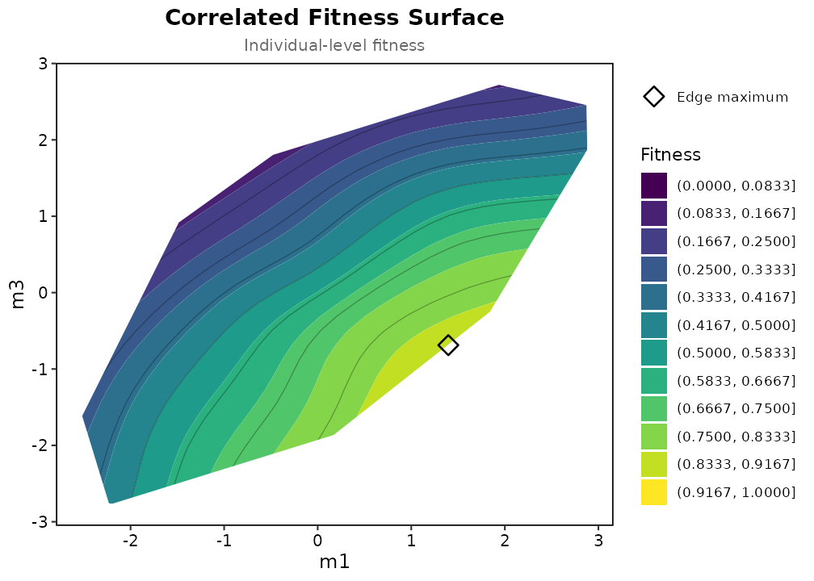
Fitness surface along the first and last canonical axes
6. Interpretation Guide
6.1 Statistical Significance
The p-values test whether each gradient differs from zero. Treat them as a guide to how much the data say, not as the size of selection: a gradient of 0.05 with p < 0.001 is well estimated but weak, and a gradient of 0.4 with p = 0.08 may matter more. Report the estimate and its standard error or bootstrap interval alongside the p-value.
6.2 Selection Types
Linear Selection ():
| sign | Interpretation |
|---|---|
| Positive (+) | Selection favours larger trait values |
| Negative (-) | Selection favours smaller trait values |
| Zero (0) | No directional selection |
Quadratic Selection ():
| sign | Interpretation | Shape |
|---|---|---|
| Negative (-) | Stabilising selection | ∩-shaped |
| Positive (+) | Disruptive selection | ∪-shaped |
| Zero (0) | No nonlinear selection | Linear |
Correlational Selection ():
| sign | Interpretation | Shape of the surface |
|---|---|---|
| Positive (+) | Selection favours positive correlation (both traits high or both low) | A ridge running from low-low to high-high; the two off-diagonal corners are valleys |
| Negative (-) | Selection favours negative correlation (one high, one low) | A ridge running from high-low to low-high |
| Zero (0) | Traits evolve independently | Contours are symmetric about both axes |
The classic example is Brodie (1992) on garter snakes: neither colour pattern nor escape behaviour was under strong selection on its own, but striped snakes that fled in a straight line and unstriped snakes that reversed direction both survived better than the mismatched combinations. That is positive correlational selection between two traits, visible as a ridge across the fitness surface rather than as a peak on either axis.
6.3 Effect Sizes
For standardised traits ():
| Effect size | |
|---|---|
| < 0.1 | Weak selection |
| 0.1 - 0.3 | Moderate selection |
| > 0.3 | Strong selection |
These bands are relative to the published record: across the studies collated by Kingsolver et al. (2001) the median was 0.16 and the median was 0.10, so a gradient above 0.3 is stronger than most selection measured in the wild. Gradients standardised by the trait mean instead of its standard deviation put traits with different variances on one scale, and Hereford et al. (2004) collate the record on that scale; the package reports variance-standardised gradients only.
6.4 Example Interpretations
Scenario 1: β_size = 0.25, p = 0.001
→ "Body size experiences significant positive directional selection.
A one-standard-deviation increase in size increases relative fitness by 0.25 units."
Scenario 2: γ_size = -0.15, p = 0.02
→ "Body size shows significant stabilising selection.
Intermediate sizes have highest fitness; extremes are disadvantageous."
Scenario 3: γ_size x beak = 0.32, p = 0.004
→ "Significant positive correlational selection between size and beak depth.
Selection favours individuals that are either both large or both small."7. Troubleshooting and Common Issues
7.0 Check the Assumptions First
check_selection_assumptions() puts the checks a Lande
and Arnold analysis rests on in one table: Mardia’s tests of
multivariate normality of the traits, which is what lets the gradients
be read as the slope and curvature of the fitness surface (Lande &
Arnold, 1983; Morrissey & Sakrejda, 2013; they equal
by least squares whatever the distribution), Shapiro-Wilk for each
trait, the largest VIF, the individuals (for survival, the rarer
outcome) per quadratic term, and for the gradient models residual
normality and heteroscedasticity, separation, or the dispersion ratio.
With the performance package installed it adds that
package’s heteroscedasticity and overdispersion tests and an R squared.
Palacio et al. (2019) set out what to report; this table is meant to sit
beside the gradients.
check_selection_assumptions(bumpus, "survival", c("total_length", "weight", "humerus"))
#> Assumption checks (binary fitness, n = 136)
#>
#> check statistic p
#> Multivariate normality: Mardia skewness 1.05 0.006
#> Multivariate normality: Mardia kurtosis 15 0.997
#> Normality of total_length (Shapiro-Wilk) 0.978 0.029
#> Normality of weight (Shapiro-Wilk) 0.97 0.004
#> Normality of humerus (Shapiro-Wilk) 0.98 0.048
#> Collinearity: largest VIF 1.75
#> Rarer outcome per quadratic term 7.11
#> Logistic model: separation 1.34
#> Model fit: R2_Tjur (performance) 0.24
#> note
#> skewed
#> no evidence against normality
#> not normal
#> not normal
#> not normal
#> below 5
#> 64 of the rarer outcome for 9 terms; treat gamma with care
#> no sign of separation
#> 7.1 Sample Size Recommendations
| Analysis | Minimum n | Recommended n |
|---|---|---|
| Linear selection (continuous) | 10 | > 30 |
| Linear selection (binary) | 20 per group | > 50 per group |
| Nonlinear selection | 20 | > 100 |
| Bivariate TPS | 30 | > 200 |
The nonlinear model grows quickly with the number of traits: traits give linear, quadratic and correlational terms, so nine traits mean 54 terms. Allow about ten individuals per term, and for binary fitness about ten survivors (or deaths, whichever is rarer) per term; below that the quadratic and correlational estimates are noise with p-values attached. Choose fewer traits on biological grounds rather than fitting them all.
7.2 Convergence Issues in Binary Models
Symptoms:
- Very large coefficients (> 10)
- Extremely large standard errors
- Warning about “complete separation”
Solutions:
7.3 Missing Data
prepare_selection_data() checks the fitness and trait
columns for NA. The default,
na_action = "warn", keeps every row and warns with the
count. The models drop incomplete rows themselves, and traits and
relative fitness are standardised on the rows that are analysed, so the
rows that fall out do not shift the means. Rows with a missing group
label are kept and treated as their own group.
na_action = "drop" removes incomplete rows up front and
prints how many went, which keeps the sample size explicit and is the
better choice when the same data go on to the splines and surfaces.
# Where are the gaps, and how many rows do they cost?
colSums(is.na(data[, c(fitness_col, trait_cols)]))
sum(!complete.cases(data[, c(fitness_col, trait_cols)]))
prepared <- prepare_selection_data(data, fitness_col, trait_cols, na_action = "drop")Imputing traits is possible but changes what is being estimated. With more than a few percent of rows incomplete, report the count and analyse the complete cases.
7.4 Multicollinearity
High correlations between traits can inflate standard errors:
# Check correlations
cor(data[, trait_cols])
# Calculate VIF
if (requireNamespace("car", quietly = TRUE)) {
vif_vals <- car::vif(model)
# VIF > 5 is flagged by the package; > 10 is serious
}Solutions:
- Use ridge regression
- Collect more data
7.5 Reduced k Warning
univariate_spline() warns “Reducing k from 10 to …” when
a trait has fewer distinct values than the basis asks for, which happens
with small groups, single years or coarsely measured traits. The curve
is then less flexible than the default. To set the basis size yourself,
in the spline or the surface:
uni <- univariate_spline(prepared, "survival", "size", k = 5)
surface <- correlated_fitness_surface(prepared, "survival", c("size", "colour"), k = 15)8. References
Lande, R., & Arnold, S. J. (1983). The measurement of selection on correlated characters. Evolution, 37(6), 1210-1226.
Stinchcombe, J. R., Agrawal, A. F., Hohenlohe, P. A., Arnold, S. J., & Blows, M. W. (2008). Estimating nonlinear selection gradients using quadratic regression coefficients: double or nothing? Evolution, 62(9), 2435-2440.
Schluter, D. (1988). Estimating the form of natural selection on a quantitative trait. Evolution, 42(5), 849-861.
Brodie, E. D. (1992). Correlational selection for color pattern and antipredator behavior in the garter snake Thamnophis ordinoides. Evolution, 46(5), 1284-1298.
Kingsolver, J. G., Hoekstra, H. E., Hoekstra, J. M., Berrigan, D., Vignieri, S. N., Hill, C. E., Hoang, A., Gibert, P., & Beerli, P. (2001). The strength of phenotypic selection in natural populations. The American Naturalist, 157(3), 245-261.
Wood, S. N. (2017). Generalized Additive Models: An Introduction with R (2nd ed.). Chapman and Hall/CRC.
Brodie, E. D., III, & Janzen, F. J. (1996). On the assignment of fitness values in statistical analyses of selection. Evolution, 50(1), 437-442.
Brodie, E. D., III, Moore, A. J., & Janzen, F. J. (1995). Visualizing and quantifying natural selection. Trends in Ecology & Evolution, 10(8), 313-318.
Schluter, D., & Nychka, D. (1994). Exploring fitness surfaces. The American Naturalist, 143(4), 597-616.
Palacio, F. X., Ordano, M., & Benitez-Vieyra, S. (2019). Measuring natural selection on multivariate phenotypic traits: a protocol for verifiable and reproducible analyses of natural selection. Israel Journal of Ecology & Evolution, 65, 130-136. doi:10.1163/22244662-20191064
Svensson, E. I. (2023). Phenotypic selection in natural populations: what have we learned in 40 years? Evolution, 77(7), 1493-1504.
Mardia, K. V. (1970). Measures of multivariate skewness and kurtosis with applications. Biometrika, 57(3), 519-530.
Beausoleil, M.-O., Carrión, P. L., Podos, J., Camacho, C., Rabadán-González, J., Richard, R., Lalla, K., Raeymaekers, J. A. M., Knutie, S. A., De León, L. F., Chaves, J. A., Clayton, D. H., Koop, J. A. H., Sharpe, D. M. T., Gotanda, K. M., Huber, S. K., Barrett, R. D. H., & Hendry, A. P. (2023). The fitness landscape of a community of Darwin’s finches. Evolution, 77(12), 2533-2546.
Beausoleil, M.-O., Camacho, C., Rabadán-González, J., Richard, R., Lalla, K., Raeymaekers, J. A. M., Knutie, S. A., De León, L. F., Chaves, J. A., Clayton, D. H., Koop, J. A. H., Sharpe, D. M. T., Gotanda, K. M., Huber, S. K., Barrett, R. D. H., & Hendry, A. P. (2019). Temporally varying disruptive selection in the medium ground finch (Geospiza fortis). Proceedings of the Royal Society B, 286(1916), 20192290.
Arnold, S. J., & Wade, M. J. (1984). On the measurement of natural and sexual selection: theory. Evolution, 38(4), 709-719.
Hereford, J., Hansen, T. F., & Houle, D. (2004). Comparing strengths of directional selection: how strong is strong? Evolution, 58(10), 2133-2143.
Morrissey, M. B., & Sakrejda, K. (2013). Unification of regression-based methods for the analysis of natural selection. Evolution, 67(7), 2094-2100.
Phillips, P. C., & Arnold, S. J. (1989). Visualizing multivariate selection. Evolution, 43(6), 1209-1222.
Blows, M. W., & Brooks, R. (2003). Measuring nonlinear selection. The American Naturalist, 162(6), 815-820.
Bisgaard, S., & Ankenman, B. (1996). Standard errors for the eigenvalues in second-order response surface models. Technometrics, 38(3), 238-246.
Reynolds, R. J., Childers, D. K., & Pajewski, N. M. (2010). The distribution and hypothesis testing of eigenvalues from the canonical analysis of the gamma matrix of quadratic and correlational selection gradients. Evolution, 64(4), 1076-1085.
Morrissey, M. B. (2014). In search of the best methods for multivariate selection analysis. Methods in Ecology and Evolution, 5(10), 1095-1109.
Bumpus, H. C. (1899). The elimination of the unfit as illustrated by the introduced sparrow, Passer domesticus. Biological Lectures, Marine Biological Laboratory, Woods Hole, 209-226.
Martin, C. H. (2016). Context dependence in complex adaptive landscapes: frequency and trait-dependent selection surfaces within an adaptive radiation of Caribbean pupfishes. Evolution, 70(6), 1265-1282.